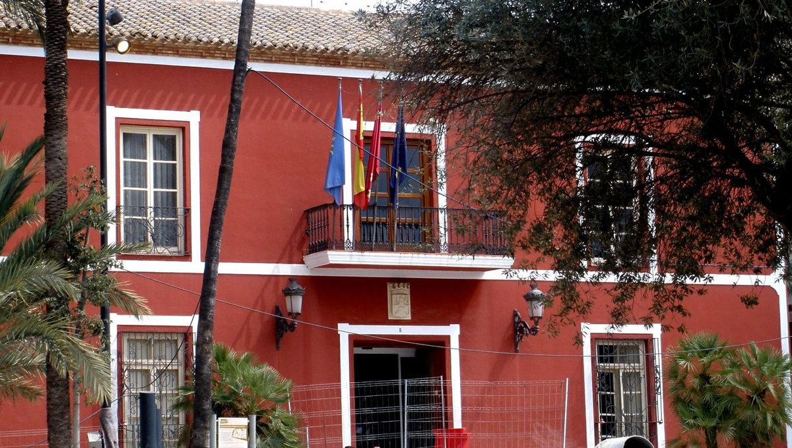

스페인 무르시아주 에너지공동체 19곳 생겼지만 발전 중은 4곳…지자체가 공공건물 지붕 내주고 취약가구에 전기 나눈다

로스알카사레스, 공공건물 지붕 4곳 내주는 대가로 생산 전기 10%를 에너지빈곤 가구에…선구 공동체는 정부 보조금 12만4,000유로 정산 못 받아 대출로 공사
스페인 남동부 무르시아주에서 주민과 중소기업, 지자체가 함께 재생에너지를 만들어 나눠 쓰는 에너지공동체가 19곳 설립됐지만, 실제로 전기를 생산하는 곳은 무르시아 지역에너지공동체(CELM)와 포르투나·부야스·라솔라르 등 4곳에 그친다고 무르시아 재생에너지기업협회(Aremur)가 집계했다. 주 정부는 생태전환부가 지원하는 관측소 Ecodes 자료를 들어 에너지공동체가 1곳 이상 있는 지자체 비율이 26.7%로 카나리아·바스크·나바라에 이어 4위이고, 2023년 이후 태양광 설비가 93% 늘어 3,500MW에 이르렀으며 그중 약 600MW가 가정·기업 4만 곳 넘는 자가소비 설비라고 밝혔다. 무르시아 9개 지자체의 공동체 설립을 도운 지속가능발전재단의 에밀리오 바예스테르(Emilio Ballester) 이사장은 학교·체육관·청사 지붕에서 남는 전기를 법정 최대 반경 5km 안의 주민과 상점, 취약가구에 나눌 수 있다며, 100kW 설비 8만 유로를 조합원 50명이 나누면 1명당 1,600유로라는 예시 계산을 내놓았고 추진 측은 투자 회수 5~6년, 요금 절감 연 20~60%로 추산했다. 로스알카사레스시는 공공건물 지붕 4곳(곳당 약 10kW)을 에너지공동체에 내줄 계획이며, 그 대가로 생산 전기의 10%를 에너지빈곤 가구에 내놓게 해 약 12가구가 무료 전기를 받을 것으로 시가 추산했다. 2022년 주거단지 주민들이 만든 CELM은 개인 12명·기업 4곳이 아파트 2동 지붕 패널 24장에서 시작해 100kW·50kW 설비와 공영주차장 전기차 충전기 등 7개 사업으로 넓혔지만, 정부 보조금 12만4,000유로는 정산이 복잡해 아직 받지 못했고 공사비는 대출로 냈다. 루벤 아얄라(Rubén Ayala) CELM 회장은 "길게 보면 그만한 가치가 있다"면서도 주민들이 잉여전력 과세를 걱정해 25년 지붕 대여를 꺼리는 것을 어려움으로 꼽았다.
시민에너지 관점
무르시아에서 공동체 19곳 가운데 발전까지 간 곳이 4곳뿐인 것은 주민 의지보다 서류와 인허가, 보조금 정산 같은 행정 장벽이 발목을 잡고 있음을 보여 준다. 공공건물 지붕을 주민 단체에 내주는 것이 특혜 아니냐는 우려가 나올 수 있지만, 로스알카사레스처럼 생산 전기의 일정 몫을 에너지빈곤 가구에 돌리도록 조건을 걸면 지붕은 오히려 공공의 이익을 넓히는 자산이 된다. 오스트리아 빈의 시 에너지공기업이 2012년부터 시민이 패널 몫을 사서 참여하는 시민 태양광발전소를 세워 왔듯, 새 땅을 깎지 않고 지역 안에서 돈과 전기가 도는 길은 공공 지붕과 주민 출자에 있다. 국내 지자체도 학교·체육관·청사 지붕을 주민 공동체에 장기로 빌려주되 취약가구 몫을 조건으로 다는 공유재산 임대 기준과 보조금 정산 간소화를 서둘러야 한다.
출처: 라 베르다드(La Verdad) 2026-10-26 José Alberto González 원문 보기
スペイン・ムルシア州のエネルギー共同体、19団体設立も発電中は4団体…自治体が公共施設の屋根を貸し、弱い立場の世帯に電気を分ける
ロス・アルカサレス、公共施設の屋根4か所を貸す代わりに発電量の10%をエネルギー貧困世帯へ…先駆的な共同体は政府補助金12万4,000ユーロの精算が終わらず融資で工事
スペイン南東部のムルシア州で、住民や中小企業、自治体が一緒に再生可能エネルギーをつくって分け合うエネルギー共同体が19団体設立されたが、実際に発電しているのはムルシア地域エネルギー共同体（CELM）とフォルトゥナ、ブジャス、ラ・ソラールの4団体にとどまると、ムルシア再生可能エネルギー企業協会（Aremur）が集計した。州政府は、環境移行省が支援する観測機関Ecodesのデータをもとに、エネルギー共同体が1つ以上ある自治体の割合は26.7%でカナリア、バスク、ナバラに次ぐ4位であり、2023年以降に太陽光設備は93%増えて3,500MWに達し、うち約600MWは4万を超える家庭・企業の自家消費設備だと説明した。州内9自治体で共同体の設立を支援した持続可能な発展財団のエミリオ・バジェステル（Emilio Ballester）理事長は、学校や体育館、庁舎の屋根で余った電気を、法定上限の半径5km以内の住民や商店、弱い立場の世帯に分けられるとし、100kWの設備8万ユーロを組合員50人で分ければ1人1,600ユーロという試算例を示した。推進側は投資回収5～6年、電気料金の節約は年20～60%と見込んでいる。ロス・アルカサレス市は公共施設の屋根4か所（1か所約10kW）をエネルギー共同体に貸す計画で、その代わりに発電量の10%をエネルギー貧困世帯に提供させ、約12世帯が無料で電気を受けられると市は見込む。2022年に住宅団地の住民がつくったCELMは、個人12人と企業4社が集合住宅2棟の屋根のパネル24枚から始め、100kWと50kWの設備、公営駐車場の電気自動車充電器など7つの事業に広げたが、政府補助金12万4,000ユーロは精算手続きが複雑でまだ受け取れず、工事費は融資でまかなった。CELMのルベン・アヤラ（Rubén Ayala）会長は「長い目で見れば価値がある」と話す一方、余剰電力への課税を心配する住民が25年間の屋根貸しをためらうことを課題に挙げた。
市民エネルギーの視点
ムルシアで19の共同体のうち発電までこぎつけたのが4つだけなのは、住民の意欲より書類や許認可、補助金の精算といった行政の壁が足を引っ張っていることを示している。公共施設の屋根を住民団体に貸すのは優遇ではないかという懸念もあるだろうが、ロス・アルカサレスのように発電量の一定割合をエネルギー貧困世帯に回す条件を付ければ、屋根はむしろ公共の利益を広げる資産になる。オーストリア・ウィーンの市営エネルギー会社が2012年から、市民がパネルの持ち分を買って参加する市民太陽光発電所を建ててきたように、新たな土地を削らずに地域の中でお金と電気を回す道は、公共の屋根と住民出資にある。韓国の自治体も、学校や体育館、庁舎の屋根を住民共同体に長期で貸し、弱い立場の世帯への配分を条件とする公有財産の貸付基準と、補助金精算の簡素化を急ぐべきだ。
出典: ラ・ベルダ（La Verdad） 2026-10-26 ホセ・アルベルト・ゴンサレス（José Alberto González） 原文を読む
西班牙穆尔西亚大区成立19个能源社区，发电中的仅4个；地方政府出借公共建筑屋顶，向弱势家庭分电
洛斯阿尔卡萨雷斯以4处公共建筑屋顶换取10%发电量供能源贫困家庭使用；先行社区的12.4万欧元政府补贴因结算未完，只能贷款施工
据穆尔西亚可再生能源企业协会（Aremur）统计，西班牙东南部穆尔西亚大区由居民、中小企业和地方政府共同生产并分享可再生能源的能源社区已成立19个，但真正在发电的只有穆尔西亚地方能源社区（CELM）以及福尔图纳、布利亚斯、拉索拉尔等4个。大区政府援引生态转型部支持的观察机构Ecodes的数据称，拥有至少一个能源社区的市镇比例为26.7%，仅次于加那利、巴斯克和纳瓦拉，位居第四；2023年以来光伏装机增长93%，达到3,500MW，其中约600MW是4万多户家庭和企业的自发自用设施。曾协助大区内9个市镇成立能源社区的可持续发展基金会会长埃米利奥·巴列斯特尔（Emilio Ballester）表示，学校、体育馆和政府办公楼屋顶的富余电力，可以在法定最大半径5公里内分享给居民、商店和弱势家庭；他举例说，造价8万欧元的100kW设施若由50名成员分摊，每人1,600欧元，推动方估算投资回收期为5至6年，每年可节省电费20%至60%。洛斯阿尔卡萨雷斯市计划将4处公共建筑屋顶（每处约10kW）交给能源社区使用，条件是拿出10%的发电量给能源贫困家庭，市政府估计约12户家庭可获得免费电力。2022年由住宅区居民成立的CELM，由12名个人和4家企业组成，从两栋公寓楼屋顶的24块光伏板起步，扩展到100kW和50kW设施、公共停车场电动汽车充电桩等7个项目，但12.4万欧元的政府补贴因结算手续复杂至今未到账，工程款只能靠贷款支付。CELM会长鲁本·阿亚拉（Rubén Ayala）表示"从长远看是值得的"，同时也指出，居民担心余电上网被征税，不愿出借屋顶25年，这是一大难题。
市民能源视角
穆尔西亚19个社区中只有4个走到发电这一步，说明拖后腿的不是居民意愿，而是文书、审批和补贴结算等行政壁垒。有人会担心把公共建筑屋顶交给居民团体是否属于特殊照顾，但只要像洛斯阿尔卡萨雷斯那样附加条件，把一定比例的电力留给能源贫困家庭，屋顶反而会成为扩大公共利益的资产。正如奥地利维也纳的市属能源企业自2012年起建设由市民购买光伏板份额参与的市民光伏电站那样，不必开发新土地、让资金和电力在地方内部循环的路径，就在公共屋顶和居民出资之中。韩国地方政府也应尽快制定公有财产出租标准，把学校、体育馆和政府办公楼屋顶长期租给居民社区，并以向弱势家庭供电为条件，同时简化补贴结算。
来源: 《真理报》（La Verdad） 2026-10-26 何塞·阿尔贝托·冈萨雷斯（José Alberto González） 查看原文
Spain's Region of Murcia has 19 energy communities but only four generating; councils lend public roofs and share power with vulnerable households
Los Alcázares to offer four public roofs in return for 10% of output going to energy-poor households; a pioneering community is still waiting for a 124,000-euro government grant and borrowed to build
Nineteen energy communities, in which residents, small businesses and councils produce and share renewable electricity, have been set up in the Region of Murcia in south-eastern Spain, but only four are actually generating power, the Local Energy Community of Murcia (CELM) and those of Fortuna, Bullas and La Solar, according to a count by the regional renewable energy business association Aremur. The regional government, citing the Ecodes observatory backed by the Ministry for the Ecological Transition, said 26.7% of Murcian municipalities have at least one energy community, the fourth-highest share after the Canary Islands, the Basque Country and Navarre, and that installed solar capacity has risen 93% since 2023 to 3,500 MW, of which about 600 MW is self-consumption spread across more than 40,000 homes and businesses. Emilio Ballester, president of the Fundación Desarrollo Sostenible, which has helped set up communities in nine Murcian municipalities, said surplus power from the roofs of schools, sports halls and council buildings can be shared with residents, shops and vulnerable households within a radius of up to 5 km, the legal maximum, and gave an illustrative calculation in which a 100 kW installation costing 80,000 euros split among 50 members comes to 1,600 euros each; promoters estimate a payback of five to six years and bill savings of 20 to 60% a year. Los Alcázares council plans to assign four public roofs, each able to host about 10 kW, to an energy community in return for 10% of the output going to households in energy poverty, which the council estimates will give about 12 families free electricity. CELM, founded in 2022 by residents of a housing estate and made up of 12 individuals and four companies, grew from 24 panels on the roofs of two apartment buildings to seven projects including 100 kW and 50 kW installations and electric vehicle chargers in public car parks, but it has yet to receive a 124,000-euro government grant because justifying the spending has been very complicated, and it took out a loan to pay for the works. Its president, Rubén Ayala, said that "in the long run it is worth it," while naming as a difficulty residents' reluctance to lend roofs for 25 years for fear of a tax on surplus power fed into the grid.
Citizen Energy View
That only four of Murcia's 19 communities have reached the generating stage shows that paperwork, permits and grant accounting, not a lack of local will, are holding them back. Some may worry that lending public roofs to residents' groups amounts to a favour, but attaching a condition like Los Alcázares does, with a share of output going to energy-poor households, turns those roofs into assets that widen the public benefit. Just as Vienna's municipal energy company has since 2012 built citizen solar plants in which residents buy a share of the panels, the way to keep money and power circulating locally without clearing new land lies in public roofs and residents' investment. Korean local governments should move quickly to set rules for leasing school, sports hall and council roofs long-term to residents' communities on condition that vulnerable households get a share, and to simplify grant settlement.
Source: La Verdad 2026-10-26 José Alberto González Read the original